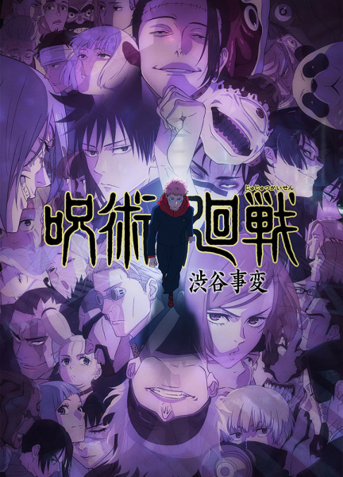
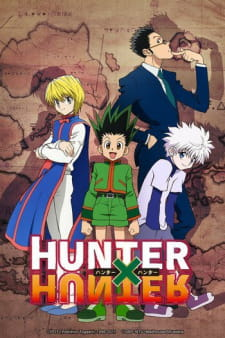

MAPPA · 2020 – Present
Jujutsu Kaisen
In a world where cursed spirits feed on unsuspecting humans, Yuji Itadori swallows a rotting finger — and everything changes.
Explore the Series
MAPPA · 2020 – Present
In a world where cursed spirits feed on unsuspecting humans, Yuji Itadori swallows a rotting finger — and everything changes.
Explore the Series
Written and illustrated by Gege Akutami, serialized in Weekly Shōnen Jump since March 2018.
Animated by MAPPA, known for stunning fight choreography and fluid animation quality.
Won multiple Crunchyroll Anime Awards including Anime of the Year and Best Action.
One of the best-selling manga series of all time with over 80 million copies in circulation.
2020 · 24 Episodes
Yuji Itadori joins Tokyo Jujutsu High after swallowing Sukuna's cursed finger, beginning his journey as a vessel.

2021 · Film
Yuta Okkotsu enrolls at Jujutsu High haunted by the cursed spirit of his childhood friend Rika.

2023 · 23 Episodes
The Hidden Inventory arc and the catastrophic Shibuya Incident that shakes the entire jujutsu world.
Grade 1 Sorcerer · Sukuna's Vessel
Possesses superhuman physical abilities and serves as the host for the King of Curses, Ryomen Sukuna.
Special Grade · Strongest Sorcerer
Wielder of the Six Eyes and Limitless technique. Widely regarded as the most powerful jujutsu sorcerer alive.
Grade 2 Sorcerer · Ten Shadows
User of the Ten Shadows Technique, capable of summoning shikigami from his own shadow.
Grade 3 Sorcerer · Straw Doll
Uses the Straw Doll Technique with a hammer and nails to curse enemies through their own blood.
Special Grade · King of Curses
The most powerful cursed spirit in history, existing as 20 fingers scattered across the world.
Special Grade · Copy Technique
Possesses an immense amount of cursed energy and the ability to copy any cursed technique he encounters.

